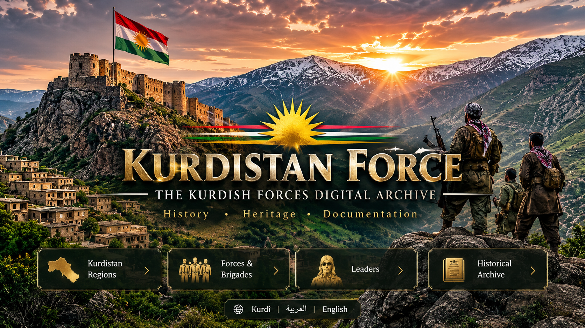

ئەرشیفی دیجیتاڵی مێژوو و کەلتووری کوردی
☀
KURDISTAN FORCE
مێژوو · میرات · بەڵگەنامە
شوێنێک بۆ پاراستن و ناساندنی مێژووی کوردی بە پشتبەستن بە سەرچاوە.
دەستپێکردنی گەڕانچوار ناوچە · یەک میرات
پارچەکانی کوردستان
ناوچەیەک هەڵبژێرە بۆ دەستپێکردنی گەڕان.
ئەرشیفی گشتی و گەڕانی ئینتەرنێت
لە زانیارییەکاندا بگەڕێ
جۆری گەڕان هەڵبژێرە؛ لە ئەرشیفی ناوخۆ یان لە Wikipedia بگەڕێ.
نموونە: مێژووی کورد، کۆماری مەهاباد، پێشمەرگە
ئەنجامەکان
هیچ ئەنجامێک نییە. وشەیەکی تر تاقی بکەرەوە.
تێبینی: ئەم ئەرشیفە نموونەیەکی سەرەتاییە. زانیارییەکان لە سەرچاوەکانەوە وەردەگیرێن؛ بۆ بەکارهێنانی مێژوویی هەمیشە سەرچاوەکە بخوێنەرەوە.
ئامانج
پاراستنی مێژوو بە زانیاریی دروست
Kurdistan Force ئەرشیفێکی دیجیتاڵییە بۆ کۆکردنەوە و ڕێکخستنی زانیاریی مێژوویی. هەر بابەتێک دەبێت سەرچاوەی دیاریکراوی هەبێت.